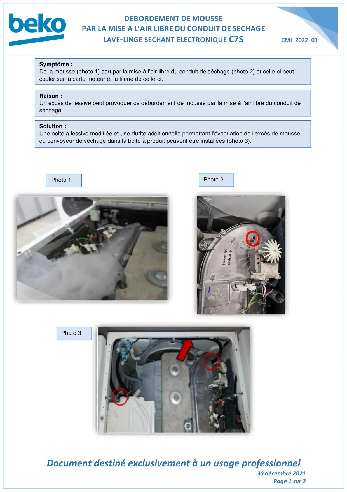
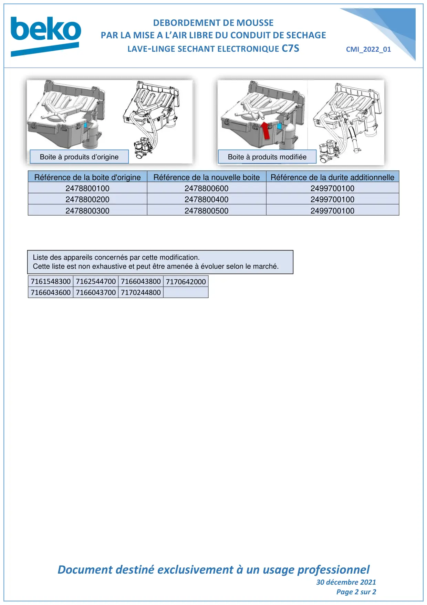

Bulletin technique modification boite à produits lave linge séchant

DEBORDEMENT DE MOUSSEPAR LA MISE A L’AIR LIBRE DU CONDUIT DE SECHAGELAVE-LINGE SECHANT ELECTRONIQUE C7SDocument destiné exclusivement à un usage professionnel30 décembre 2021Page 1 sur 2CMI_2022_01Symptôme :De la mousse (photo 1) sort par la mise à l’air libre du conduit de séchage (photo 2) et celle-ci peutcouler sur la carte moteur et la filerie de celle-ci.Raison :Un excès de lessive peut provoquer ce débordement de mousse par la mise à l’air libre du conduit deséchage.Solution :Une boite à lessive modifiée et une durite additionnelle permettant l’évacuation de l’excès de moussedu convoyeur de séchage dans la boite à produit peuvent être installées (photo 3).Photo 1Photo 2Photo 3
1 / 2
DEBORDEMENT DE MOUSSEPAR LA MISE A L’AIR LIBRE DU CONDUIT DE SECHAGELAVE-LINGE SECHANT ELECTRONIQUE C7SDocument destiné exclusivement à un usage professionnel30 décembre 2021Page 2 sur 2CMI_2022_01Référence de la boite d'origineRéférence de la nouvelle boiteRéférence de la durite additionnelle2478800100247880060024997001002478800200247880040024997001002478800300247880050024997001007161548300 7162544700 7166043800 71706420007166043600 7166043700 7170244800Boite à produits d’origineBoite à produits modifiéeListe des appareils concernés par cette modification.Cette liste est non exhaustive et peut être amenée à évoluer selon le marché.
2 / 2